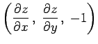
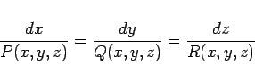

Inhalt Index DeskTop Bronstein

 Differentialgleichungen Partielle Differentialgleichungen Partielle Differentialgleichungen 1. Ordnung Lineare partielle Differentialgleichungen 1. Ordnung
Differentialgleichungen Partielle Differentialgleichungen Partielle Differentialgleichungen 1. Ordnung Lineare partielle Differentialgleichungen 1. Ordnung


Im Falle zweier unabhängiger Veränderlicher x1=x und x2=y mit
ist die Lösung z = f(x,y) eine Fläche im x,y,z-Raum, die Integralfläche der Differentialgleichung genannt wird. Die Gleichung (9.71a) bedeutet, daß in jedem Punkt der Integralfläche z = f(x,y) der Normalenvektor  orthogonal zu dem in diesem Punkt gegebenen Vektor (P,Q,R) ist. Dabei nimmt das System (9.70b) die Form
|  | (9.71b) |
an. Daraus folgt (s. Feldlinien eines Vektorfeldes), daß die Integralkurven des Systems, die auch die Charakteristiken des Systems genannt werden, die Vektoren (P,Q,R) berühren. Daher liegt eine Charakteristik, die mit der Integralfläche z =f(x,y) einen Punkt gemeinsam hat, ganz in dieser Fläche. Unter der Bedingung, daß der Existenzsatz gilt, verläuft durch jeden Punkt des Raumes eine Integralkurve des charakteristischen Systems, so daß die Integralflächen aus Charakteristiken bestehen.